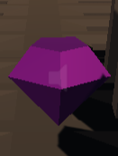
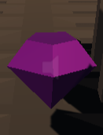

Il gioco
Menù
Il gioco ha ben 4 modalità diverse: easy, medium, difficult e random. Per quanto riguarda le prime 3 modalità l'unica differenza saranno il numero di draghi
presenti nella modalità di gioco e la velocità delle trappole, mentre la posizione di quest'ultime risulterà sempre uguale. La modalità random invece è quella
più complicata perchè il numero di draghi, trappole e la loro posizione sarà completamente casuale rendendo, se particolarmente sfortunati, l'impresa davvero ardua.
Se si schiaccia direttamente play senza selezionare la difficoltà quella di default sarà la medium.
Ostacoli
I draghi sono delle creature molto pericolose, si aggirano intorno al ponte sbucando da sotto il ponte o attacando dall'alto. Se vieni colpito da un drago il gioco termina
immediatamente con la tua sconfitta quindi stai molto attento e guardati intorno con il mouse o il touchpad per evitarli.
Le magie, pur sembrando innocue, possono risultare molto pericolose. Se si viene colpiti da una magia l'effetto che ne consegue è un rallentamento dei movimenti quindi se si viene colpiti da troppe magie potrebbe quasi essere impossibile superare alcune trappole. Fortunatamente le magie sono molto luminose quindi facili da riconoscere anche se la loro traiettoria è imprevedibile e cambia continuamente!
Trappole
I pendoli sono delle trappole che oscillano e sono disposti nel ponte, evitali con attenzione perchè sono letali!
Queste trappole sono molto subdole, sono posizionate in ogni colonna e sparano una freccia letale.
Un classico tipo di trappola mortale che consiste in una serie di spuntoni che fuoriescono dal terreno, la chiave per superarle è partire appena le spine rientrano nel terreno quindi armati di un ottimo tempismo!
Aggira questa trappola che consiste in alcune lame rotanti, fai attenzione a non avvicinarti troppo o sarà immediatamente game over!
Aiuti
 

Fortunatamente nel ponte sono sparse queste gemme che oltre a farti aumetare il tuo punteggio finale ti aiutano, con il loro potere magico, a rallentare il movimento di tutte le trappole nel gioco quindi cerca di
raccoglierne il più possibile! Le gemme viola danno 200 punti mentre quelle blu 100.

Il protagonista del gioco possiede un sesto senso che ti aiuterà a capire se un drago si trova nei paraggi. Quando questo simbolo spunta in cima alla testa
di Max guardati attorno e cerca di capire con attenzione se è presente un drago e la sua traiettoria per evitarlo più facilmente.